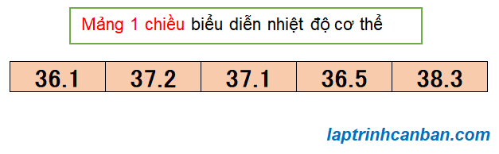

Cùng tìm hiểu về mảng 1 chiều trong C++. Bạn sẽ biết mảng 1 chiều là gì, cách khai báo mảng 1 chiều, cách nhập và xuất mảng 1 chiều trong C++, cũng như một số các bài tập mảng 1 chiều sau bài học này.
Mảng 1 chiều là gì
Trong bài Mảng trong C++ là gì chúng ta đã biết mảng trong C++, hay còn gọi là kiểu mảng trong C++ là tập hợp các dữ liệu có cùng kiểu, và các dữ liệu chứa trong mảng được gọi là phần tử của mảng đó. Và mảng trong C++ được chia ra làm 2 loại, đó là mảng 1 chiều và mảng đa chiều.
Trong ngôn ngữ C++, mảng 1 chiều là kiểu mảng mà trong đó các phần tử được sắp xếp liên tục và có thứ tự trên bộ nhớ máy tính. Các phần tử trong mảng được đánh số thứ tự từ đầu mảng tới cuối mảng, bắt đầu từ số 0 và tăng dần 1 đơn vị. Chúng ta gọi số này là index (chỉ số) của phần tử, và mảng có n phần tử thì sẽ có index bắt đầu từ [0] tới [n – 1].
Ví dụ điển hình của mảng 1 chiều là một dãy số chỉ nhiệt độ hoặc điện áp được ghi lại theo thời gian.

Mỗi phần tử trong mảng 1 chiều sẽ được xác định thông qua index của nó. Ví dụ với mảng 1 chiều ở trên, phần tử [37.1] có index bằng 2, do đó nó được xác định thông qua index là [2].
Cách khai báo mảng 1 chiều
Cách khai báo mảng một chiều đã được Kiyoshi hướng dẫn trong bài Khai báo mảng trong C++ rồi, chúng ta sẽ cùng ôn lại một chút nhé.
Để khai báo mảng 1 chiều, chúng ta cần quan tâm tới các thuộc tính của mảng cần khai báo sau đây:
- Kiểu dữ liệu: Phần tử trong mảng thuộc kiểu dữ liệu nào? Là int, char hay float? Xem thêm: Kiểu dữ liệu trong C++
- Độ dài (số phần tử): Mảng cần khai báo có bao nhiêu phần tử, cần chuẩn bị bao nhiêu chỗ để chứa nó trong bộ nhớ máy tính?
- Tên mảng: tên của mảng để phân biệt nó với các đối tượng khác trong chương trình.
Và chúng ta sử dụng cú pháp sau đây để khai báo mảng 1 chiều:
type name[length];
Trong đó type là kiểu dữ liệu, name là tên mảng, và length chính là độ dài(số phần tử) của mảng. Lưu ý là chúng ta bắt buộc phải chỉ định length - số phần tử của mảng khi khai báo mảng 1 chiều, để chương trình có thể tạo ra vùng có kích thước tương đương để lưu mảng 1 chiều này trong bộ nhớ máy tính.
Ví dụ cụ thể về cách khai báo mảng 1 chiều trong C++:
int int_arr[10]; |
Lưu ý là ngoài cách khai báo thì chúng ta cũng có thể khởi tạo và gán ngay giá trị ban đầu cho mảng 1 chiều. Khi đó, ngoài các thuộc tính ở trên thì chúng ta cần chỉ định thêm các phần tử của mảng cách nhau bởi dấu phẩy, và nằm giữa cặp dấu ngoặc nhọn {}, với cú pháp sau đây:
type array_name[length] = {value1, value2, value3, ...};
Trong đó type là kiểu dữ liệu, name là tên mảng, length là độ dài (số phần tử) của mảng, và các value là giá trị ban đầu của các phần tử của mảng.
Ví dụ cụ thể về cách khởi tạo mảng 1 chiều trong C++:
int int_arr1[6] = {}; // [0, 0 ,0 ,0 ,0 ,0 ,0] |
- Xem thêm: Khởi tạo mảng trong C++
Truy cập phần tử trong mảng 1 chiều
Sau khi tạo mảng 1 chiều, chúng ta có thể tương tác với các phần tử trong nó thông qua index.
Để truy cập phần tử trong mảng 1 chiều, chúng ta viết tên mảng đằng trước, rồi sau đó chỉ định index của phần tử vào trong cặp dấu ngoặc vuông với cú pháp sau đây:
name[index]
Trong đó name là tên mảng, và index là index của phần tử cần truy cập.
Ví dụ với mảng num = {4,5,6,8} thì phần tử [5] có index bằng 1 sẽ được truy cập bằng cách viết num[1], và phần tử [8] sẽ được truy cập bằng cách viết num[3] chẳng hạn.
Sau khi truy cập phần tử trong mảng 1 chiều, chúng ta có thể lấy giá trị của nó, hoặc là gán giá trị mới và thay đổi giá trị ban đầu của nó.
Ví dụ, chúng ta lấy phần tử trong mảng 1 chiều, và thay đổi giá trị phần tử của mảng 1 chiều như sau:
|
Kết quả :
Phan tu thu 1: 4 |
Nhập và xuất mảng 1 chiều trong C++
Để nhập mảng 1 chiều trong C++, chúng ta cần sử dụng tới hàm cin >> () để nhập dữ liệu từ bàn phím, và vòng lặp for để có thể nhập và gán từng dữ liệu đó vào từng phần tử có trong mảng 1 chiều.
Một cách tương tự thì để xuất mảng 1 chiều trong C++, chúng ta cần sử dụng tới hàm cout << () để in giá trị phần tử, và vòng lặp for để có thể lấy giá trị từng phần tử có trong mảng 1 chiều.
Chúng ta có thể viết hàm nhập mảng 1 chiều trong C++ và hàm xuất mảng 1 chiều trong C++ như sau:
/*Tạo hàm nhập mảng 1 chiều trong C++*/ |
Dưới đây là chương trình mẫu sử dụng các hàm trên để nhập và xuất mảng 1 chiều trong C++:
|
Kết quả chương trình nhập và xuất mảng 1 chiều trong C++ như sau:
>>Nhap so phan tu: 5 |
- Xem thêm: [cin >> () trong C++ và cách nhập dữ liệu](../../nhap-xuat-trong-cpp/cin >> -trong-cpp-va-cach-nhap-du-lieu/)
- Xem thêm: [Hàm cout << () và cách xuất dữ liệu trong C++](../../nhap-xuat-trong-cpp/ham-cout << -va-cach-xuat-du-lieu-trong-cpp/)
in mảng 1 chiều
Chúng ta có 2 cách để in mảng 1 chiều trong C++, đó là cách in từng phần tử thông qua index, và cách in toàn bộ phần tử trong mảng 1 chiều bằng vòng lặp for.
in từng phần tử trong mảng 1 chiều
Trong trường hợp mảng 1 chiều có ít phần tử, hoặc là chúng ta chỉ muốn in ra một phần tử chỉ định nào đó, chúng ta có thể truy cập tới phần tử đó, lấy giá trị và in ra màn hình, thông qua việc chỉ định trực tiếp vị trí (index) của phần tử đó trong mảng.
Ví dụ cụ thể:
|
Kết quả:
4 |
in toàn bộ phần tử trong mảng 1 chiều
Cách thứ 2 để in mảng 1 chiều đó chính là sử dụng vòng lặp for để in toàn bộ phần tử trong mảng 1 chiều được chỉ định.
Trong trường hợp mảng 1 chiều chứa nhiều phần tử, và chúng ta không thể chỉ định và in từng phần tử của mảng, thì việc sử dụng vòng lặp for sẽ rất thuận tiện khi in mảng 1 chiều.
Ví dụ cụ thể:
|
Kết quả:
4 |
Bài tập mảng 1 chiều
Trong chuyên đề về mảng trong C++, Kiyoshi đã chuẩn bị rất nhiều các bài tập mảng 1 chiều với các cách giải chi tiết cho từng bài một. Đây không những là các bài tập mảng 1 chiều mà còn là các thao tác cần thiết với mảng 1 chiều được sử dụng trong các dự án viết bằng ngôn ngữ C++. Bạn có thể tham khảo cách làm của Kiyoshi, nhưng hãy tự nghĩ ra phương pháp giải cho riêng mình nhé.
Hãy tham khảo các bài tập mảng 1 chiều ở list sau đây:
Tổng kết
Trên đây Kiyoshi đã hướng dẫn bạn về mảng 1 chiều trong C++ rồi. Để nắm rõ nội dung bài học hơn, bạn hãy thực hành viết lại các ví dụ của ngày hôm nay nhé.
Và hãy cùng tìm hiểu những kiến thức sâu hơn về C++ trong các bài học tiếp theo.
URL Link
https://laptrinhcanban.com/cpp/lap-trinh-cpp-co-ban/mang-trong-cpp/mang-1-chieu-trong-cpp/
HOME › lập trình c++ cơ bản dành cho người mới học lập trình>>17. mảng trong c++